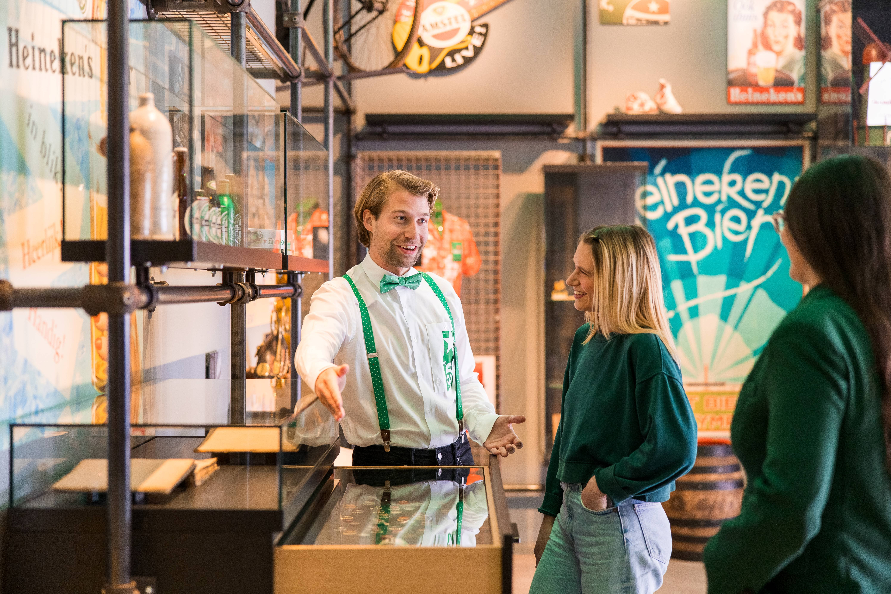
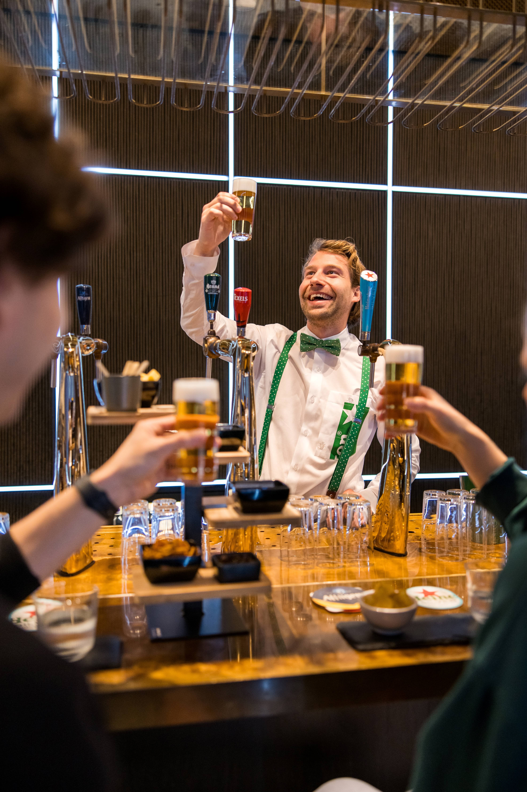
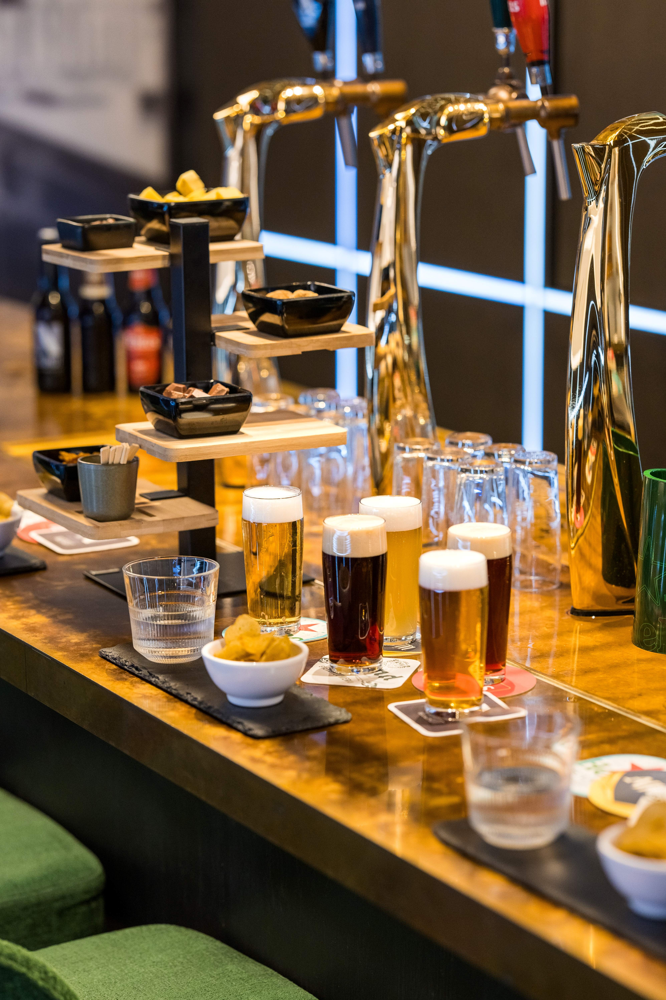
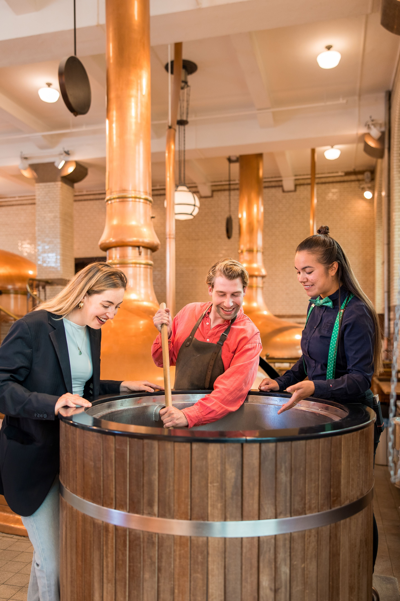
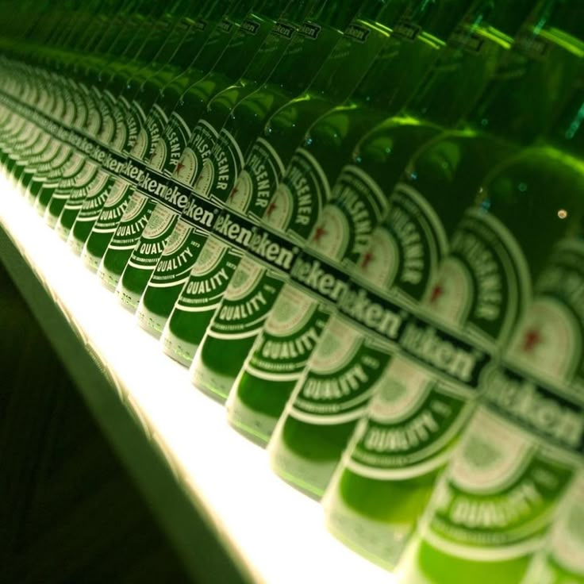
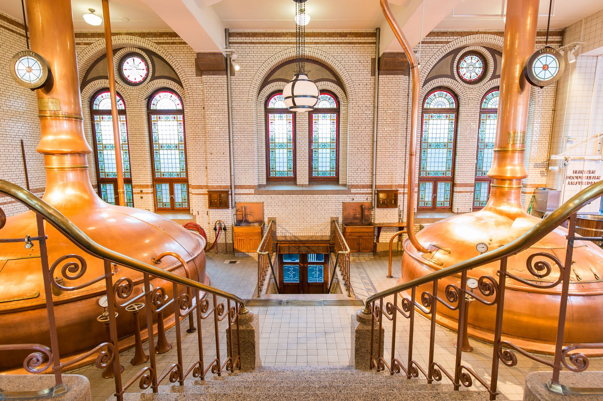

POVESTEA
The First Ahhh!
Heineken este una dintre cele mai cunoscute mărci de bere din lume, originară din Amsterdam.
Considerată o bere premium, aceasta este apreciată pentru gustul său echilibrat și pentru
experiența pe care o oferă fiecărei persoane care o savurează.
Imaginează-ți că deschizi o sticlă rece într-o zi caldă de vară. Sunetul acela mic psss
este momentul pe care mulți îl numesc simplu: The First Ahhh!.
Exact acel moment inspiră și universul brandului Heineken.
Dacă vrei să descoperi povestea completă a acestei beri și modul în care a ajuns să fie cunoscută
în peste 190 de țări, poți explora istoria oficială
aici.

EXPERIENŢA
O experiență în Amsterdam
În Amsterdam există un loc special numit Heineken Experience. Nu este doar un muzeu, ci un
tur interactiv prin istoria și procesul de fabricare al berii.
Dacă ai ajunge acolo, ai putea vedea vechile instalații de producție, ai afla cum se prepară berea și ai
putea chiar să participi la degustări.
Este genul de loc unde tradiția se întâlnește cu tehnologia și distracția.
Gândește-te la această pagină ca la o mică introducere în acel univers. Poate nu suntem chiar în
Amsterdam, dar putem explora împreună câteva lucruri interesante
despre această bere celebră.




GAMA
Tipuri de bere
De-a lungul timpului, compania a creat mai multe variante de bere, fiecare cu un gust și un stil ușor
diferit.
| Denumire |
Tip |
Alcool |
| Heineken Original |
Lager blond |
5% |
| Heineken Silver |
Lager ușor |
4% |
| Heineken 0.0 |
Fără alcool |
0% |
| Heineken Draught |
Bere la draft |
5% |

TU
Care este preferata ta?
Completează formularul de mai jos și spune-ne ce tip de bere Heineken preferi și de ce.
Rețeta
Ingrediente simple, gust special
Unul dintre secretele berii Heineken este simplitatea rețetei. Chiar dacă gustul este complex,
ingredientele sunt surprinzător de puține.
Procesul de producție pornește de la câteva elemente esențiale:
- Apă
- Malț de orz
- Hamei
- Drojdie A-yeast (secretul din 1886)
Combinația acestor ingrediente și procesul atent de fermentare creează gustul caracteristic pe care îl
recunoști imediat.

Mai mult
Mai multe detalii
Dacă vrei să afli și mai multe despre compania Heineken, istoria sa și evoluția brandului, poți explora
articolul de mai jos.